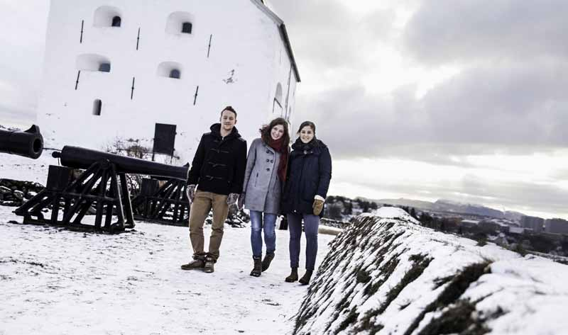
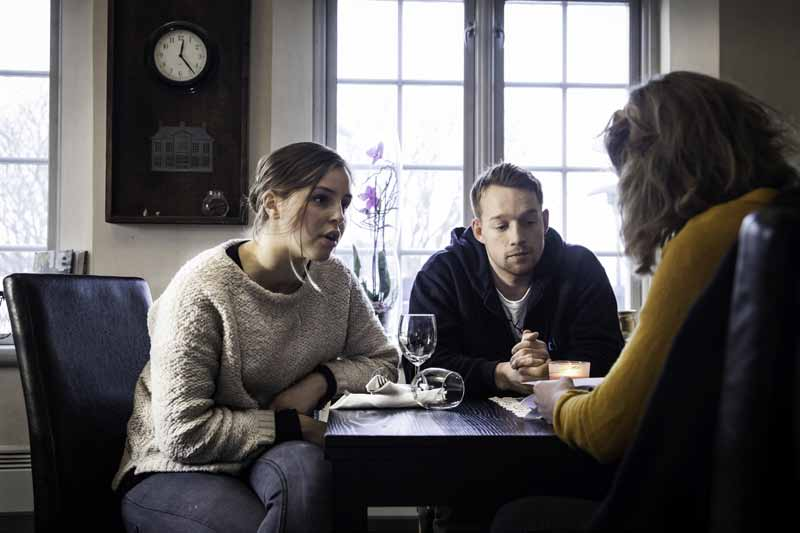

The dialogue groups at ISFiT invite students from different sides of conflict areas to get to know each other at Røros. Do they bring peace home afterwards?
TEKST: Marie Sigstad
marisig@underdusken.no
FOTO: César Mondragón
OVERSATT: César Mondragón, Bjørn Grimsmo

The International Student Festival in
Trondheim (ISFiT) gathers students
from all over the world from February
7th until the 17th. The festival is made
possible by the volunteer effort of 400
committed Trondheim students. The
dialogue groups at ISFiT invite students
from different sides of conflicts to talk
together. The students this year come
from Burundi, Armenia, Azerbaijan,
and Sri Lanka.
ISFiT President Kaja Juul Skarbø
is proud of the dialogue work, which
she believes takes the concept of ISFiT a step further and makes the festival a
peacebuilder.
– The dialogue groups gather the
young, most committed enthusiasts
from conflict areas so that they can
get an understanding of the other side
and exchange ideas that they can bring
home.
Neutral ground at Røros
The dialogue groups gather at Røros ten
days before the festival starts. Head of
dialogue Beate Nesje at ISFiT says it is
important for the participants to get to
know each other well.
– Dialogue requires openness. At
Røros they meet on neutral ground and
share the experience of the new environment,
shocked by the cold and the snow.
She believes the biggest challenge might be to get the students to open up.
– It is difficult to be honest with the
enemy. Before going to Røros we are
going to visit the Norwegian parliament
in Oslo, to show the students that this is
an open and free country.
According to Dialogue facilitator
Marius Jones at ISFiT, the personal
stories will be important. Together
with a colleague he is going to lead the
students from Sri Lanka throughout the
gathering.
– It will be exciting to hear about
the conflicts from all the sides. In Sri
Lanka they have very different perceptions
about what is held to be true. So,
it is very important that they listen to
each other.
As conversation managers, Jones
says it is very important to be neutral,
even though many of the participants
might expect them to act as arbiters in
the conflicts.
– It can be difficult to talk about
established truths, views which the
participants often have been holding
since they were kids. It will be exciting
to see how people react, and if their views
change.
Cabin hike reaching new heights Former Head of dialogue Martin Sveinssønn Melvær at ISFiT 2011, and Dialogue facilitator at ISFiT 2009, recounts the Røros gatherings as fantastic experiences. – Being on a cabin hike can be nice in itself, but the gatherings at Røros brought the trip to a new high. All emotions were amplified, and there was an extremely intense mood. In 2011, the students from Rwanda in particular raised the atmosphere, which intensified the power of the dialogue. In 2009 we had greater challenges and a tenser mood with Israelis and Palestinians, due to the Gaza war a few weeks earlier. He mentions a cultural evening during ISFiT 2009, in which participants from the different sides were to present their respective cultures. – Some participants used a map that appeared invalid in the eyes of the others. They had not considered the potential provocation. This serves to show how small issues can elicit strong emotional responses.
Successful cooperation with Nansen Dialogue Head of dialogue Nesje says ISFiT has an intimate cooperation with Nansen Dialogue Network at Nansenskolen at Lillehammer. Students have had three seminars prior to the festival, in which they received tutoring in dialogue as a method for peace building. The students have visited the chosen conflict areas as well. – This way, we have been given a proper familiarity with the conflicts. We have asked critical questions and have seen the conflicts in a light different from what the media and the experts report. Senior advisor Steinar Bryn at Nansen Centre for Peace and Dialogue says it is inspiring to see other groups in Norway use dialgoue as a working tool and a means of reconciliation. – It is great to see the students commiting themselves. Unlike other student festivals, ISFiT makes a refreshing effort with something meaningful and substantial. Bryn thinks ISFiT is contributing to improving relations between different sides of serious conflicts, but believes the follow-up could have been better. – During the lengthy gathering at Røros, where the participants can get to know each other, there are great opportunities for achievements, much more than with just a meeting. The work that is being done deserves more funding for following-up.
Challenging follow-up Former Head of dialogue Melvær agrees that the work with following-up can be greatly improved. – The goal is to make a basis for something more after ISFiT, and with so little time, this is challenging. Thus, it is important to use the same areas of conflict several years in a row, and create a network by using earlier participants. He found the follow-up seminar in Armenia and Azerbaijan the summer after the 2011 festival to be very good, but the goal was for participants to start projects on their own in their home countries. – We have not seen a project yet, but when the participants met again, they had a more reflected view of the conflict. BRING A FRIEND: ISFiT President Kaja Juul Skarbø believes that by inspiring individuals to minor actions, the dialogue groups can produce great changes. They acknowledged that the other side were not as bad as they thought. He emphasises the cooperation with Nansenskolen as essential. – We could not have justified the dialogue work without the tutorials from Nansen Dialogue. It is great that they value the cooperation.
From the smallest beginnings Nesje says ISFiT plans for a follow-up seminar in the participants’ home countries this summer. – We wish for the students to have resources to create a network in their home country with organizations working with peace, so that they can keep up the effort. Juul Skarbø believes that by inspiring individuals to minor actions, the dialogue groups as a whole can produce great changes, making an impact. – If all ISFiT participants bring a friend, we can ultimately create a large, sustainable network of dialogue.